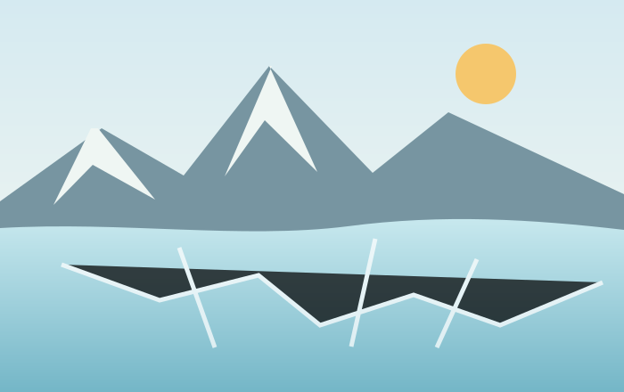

Тёплый сезон
Береговые прогулки
Светлые бухты, видовые точки, лесные тропы и долгие вечера.
Байкал хранит огромные запасы пресной воды и отличается удивительным разнообразием природы. Его берега и острова находятся на территории Иркутской области и Республики Бурятия.
Байкал — древнее тектоническое озеро в южной части Восточной Сибири. Оно известно исключительной глубиной, прозрачной водой и множеством видов, которые встречаются только здесь.
Ландшафт вокруг озера меняется от скалистых мысов и песчаных бухт до горных хребтов и таёжных склонов. Поэтому даже короткая поездка может ощущаться как несколько разных путешествий.
Байкал включён в список Всемирного наследия ЮНЕСКО. Знакомство с ним лучше строить бережно: уважать местные правила, не оставлять мусор и выбирать маршруты по погоде и силам.
Источник: UNESCO World Heritage Centre — Lake Baikal.
Условия, доступность дорог и маршрутов зависят от сезона. Планируйте поездку заранее и проверяйте местные рекомендации.
Светлые бухты, видовые точки, лесные тропы и долгие вечера.

Зимний Байкал требует подготовки: погодных проверок и сопровождения.

Наблюдение за природой и спокойные прогулки на свежем воздухе.